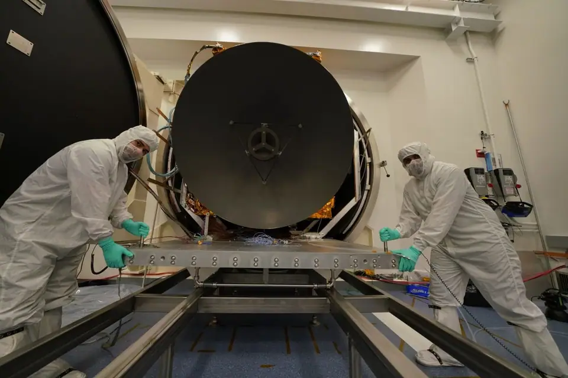

Science news ·
The UAE is going to Mars. Here’s the plan for its Hope orbiter.
The United Arab Emirates had its sights set on Mars the day before it launched its second satellite ever.
The resulting mission, a Mars orbiter dubbed Hope, has finished construction and is scheduled to launch this summer among a rush of spacecraft bound for the Red Planet. If all goes well, the UAE will become the fourth or fifth country to orbit Mars next February. While the country’s newly minted scientists are dedicated to learning something new about Mars, inquiry wasn’t the motivation for the mission.
“Going to Mars was not the main objective,” Omran Sharaf, mission lead for the Hope spacecraft, which is also known as the Emirates Mars Mission, told Space.com. “It’s a means for a bigger goal: to expedite the development in our educational sector, academic sector.”
Sharaf first heard about the Mars plan in November 2013, as he was preparing to see his prior project, an Earth-observing satellite called DubaiSat-2, launch. The Hope mission began with an order from UAE Prime Minister Mohammed bin Rashid Al Maktoum: Send a UAE-built science probe to Mars before the country’s 50th anniversary in December 2021, within a set budget.
There were other constraints too: “The science needs to be unique. Whatever you do, it shouldn’t be something that’s been done before,” Sharaf said the prime minister directed. “We should build it and not buy it, and work with others, don’t start from scratch.”
Jumping from Earth orbit to Mars in less than a decade is quite a leap, but a purposeful one for the UAE, which turned its gaze to spaceflight in 2006. “Only 50% of those missions [to Mars] succeed,” Sarah Al Amiri, science lead for the mission and the UAE’s minister of state for advanced sciences, told Space.com. “It provides the mindset that the UAE needed to have in youth who are going to be a vital part of the UAE’s post-oil economy. It’s about expanding their horizons and putting them in challenges at a time when the UAE is relatively comfortable as a nation.”
The mission is, after all, timed to celebrate the nation’s 50th anniversary. “We need to catch up with nations that have been around for centuries,” Al Amiri said.
Figuring out the science
As the Hope mission grew from proposal to project, team members began building connections with Mars scientists who could help them shape the goals of the spacecraft and with seasoned Mars-goers who could teach them how to design and build the probe.
For the latter, the UAE space center signed on with the University of Colorado Boulder’s Laboratory for Atmospheric and Space Physics, impressed by center members’ experience with Mars missions and demonstrated ability to foster less experienced team members into full-fledged participants.
For help with the science side of things, UAE representatives reached out to the Mars Exploration Program Analysis Group, an advisory group convened by NASA that includes scientists from around the world. In particular, the Hope team members needed to identify a scientifically valuable task that was feasible for this mission.
“We’re not there just to declare arrival to Mars,” Al Amiri said. “It doesn’t really make sense to call it planetary exploration and just make it about technology demonstration and about arrival.”
From that consultation, Al Amiri and her colleagues found a mission for the mission. “There was a large gap in the complete understanding of the atmosphere of Mars,” she said. “We don’t have a full understanding of the weather system of Mars throughout an entire year.”
Previous and current missions have gathered observations of the Martian weather, but only a couple of times throughout a day, Al Amiri said. These measurements have often come from surface missions and so are quite limited geographically. Weather is too complex and interconnected for scientists to really get a handle on how it works from such piecemeal data.
So, Hope aims to monitor what’s happening in the Martian atmosphere for a full local year, including making connections between layers of the atmosphere. That will help scientists understand not only Martian weather, but also how Mars has lost some of its atmosphere over billions of years of planetary history.
“That science was a sweet spot for us,” Al Amari said. “You’re complementary to other current missions, so you maximize the benefit that scientists are going to get globally from this mission, because it feeds into the current areas of research and expands on human knowledge as a whole.”
The goal of integrating data collected across layers of the Martian atmosphere means that Hope’s three instruments — a camera sensitive to optical and ultraviolet wavelengths and spectrometers tuned to infrared and to ultraviolet light — need to take simultaneous measurements that scientists can stack together.
To facilitate that process, Hope carries all its instruments on the same arm. The spacecraft also has a precisely tuned 55 hour–long orbit that enables two different views of Mars: One in which the planet rotates beneath the spacecraft, and one in which the spacecraft keeps pace and watches the same spot over time, Al Amiri said. That combination of views should make it easier for scientists to put together a complete map of the Martian atmosphere, she said.

Coronavirus management
Hope is scheduled to launch in late July or early August — the same window being targeted by NASA’s Perseverance rover and China’s first Mars mission, Tianwen. Until March, the European Space Agency and Russia were also in on the Red Planet rush with their joint ExoMars mission. But parachute problems had plagued the ExoMars mission for months, and with the travel restrictions prompted by the coronavirus pandemic, mission personnel weren’t confident they could be addressed in time. The mission is now scheduled to launch in 2022.
The Hope mission has also had to contend with pandemic complications, Sharaf said. “The coronavirus has definitely brought a different level of challenge into all this,” he said. “We thought that this phase would be the quiet phase, that we would be preparing for the launch, and it turns out that it’s not really the quiet phase because of COVID-19.”
As of late April, the spacecraft has arrived in Japan, from where it will launch aboard a Mitsubishi Heavy Industries H-IIA rocket. The spacecraft headed over earlier than originally planned to ensure it didn’t get caught in a pandemic-related hold-up.
The team also had to adjust its staffing plans. Rather than having teams bounce between the UAE and Japan, the agency sent a smaller team to Japan early enough that they would clear quarantine when the spacecraft arrived; those personnel will remain for three months straight.
Even still, something could go wrong, Sharaf said, potentially interfering with the launch. If everything goes smoothly, Hope should reach Mars sometime in February — the exact date hasn’t been set yet. And if everything continues to go smoothly, the spacecraft will spend about two terrestrial years at work around the Red Planet, with a potential mission extension likely to be evaluated a year into orbit.
“I never even fathomed the minute possibility of doing this, I don’t think any of us would have proposed to even say that ‘OK, let’s build a mission to Mars,'” Al Amiri said. “We would have thought incrementally, incrementally what’s the next best thing. But incrementally never works here. If you did not leap, if you didn’t push the bounds forward really, really fast you’re not able to overcome challenges.”
When asked how it felt to be looking ahead to the launch, especially with the US and China also targeting the Red Planet on the same time table, Sharaf said he is “Absolutely terrified, to be honest. Proud and optimistic, but terrified.”
- The UAE wants to send people to Mars. But first, a practice round on Earth.
- Hazzaa Ali Almansoori: The 1st Emirati astronaut’s space station mission in photos
- Trailblazing Mars helicopter attached to Perseverance rover for July launch
Email Meghan Bartels at mbartels@space.com or follow her @meghanbartels. Follow us on Twitter @Spacedotcom and on Facebook.
Migrated from the AUASS website archive as published, with the formatting tidied.